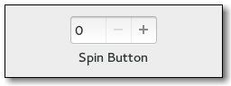

Gtk.SpinButton¶
Example¶

- Subclasses:
None
Methods¶
- Inherited:
Gtk.Entry (76), Gtk.Widget (278), GObject.Object (37), Gtk.Buildable (10), Gtk.CellEditable (3), Gtk.Editable (13), Gtk.Orientable (2)
- Structs:
class |
|
class |
|
|
|
|
|
|
|
|
|
|
|
|
|
|
|
|
|
|
|
|
|
|
|
|
|
|
|
|
|
|
|
|
|
|
Virtual Methods¶
- Inherited:
Gtk.Entry (14), Gtk.Widget (82), GObject.Object (7), Gtk.Buildable (10), Gtk.CellEditable (3), Gtk.Editable (10)
|
|
|
|
|
|
|
Properties¶
- Inherited:
Gtk.Entry (51), Gtk.Widget (39), Gtk.CellEditable (1), Gtk.Orientable (1)
Name |
Type |
Flags |
Short Description |
|---|---|---|---|
r/w |
The adjustment that holds the value of the spin button |
||
r/w/en |
The acceleration rate when you hold down a button or key |
||
r/w/en |
The number of decimal places to display |
||
r/w/en |
Whether non-numeric characters should be ignored |
||
r/w/en |
Whether erroneous values are automatically changed to a spin button’s nearest step increment |
||
r/w/en |
Whether the spin button should update always, or only when the value is legal |
||
r/w/en |
Reads the current value, or sets a new value |
||
r/w/en |
Whether a spin button should wrap upon reaching its limits |
Style Properties¶
- Inherited:
Name |
Type |
Default |
Flags |
Short Description |
|---|---|---|---|---|
|
d/r |
Style of bevel around the spin button |
Signals¶
- Inherited:
Gtk.Entry (15), Gtk.Widget (69), GObject.Object (1), Gtk.CellEditable (2), Gtk.Editable (3)
Name |
Short Description |
|---|---|
The |
|
The |
|
The |
|
The |
|
The |
Fields¶
- Inherited:
Gtk.Entry (15), Gtk.Widget (69), GObject.Object (1), Gtk.CellEditable (2), Gtk.Editable (3)
Name |
Type |
Access |
Description |
|---|---|---|---|
entry |
r |
Class Details¶
- class Gtk.SpinButton(**kwargs)¶
- Bases:
- Abstract:
No
- Structure:
A
Gtk.SpinButtonis an ideal way to allow the user to set the value of some attribute. Rather than having to directly type a number into aGtk.Entry,Gtk.SpinButtonallows the user to click on one of two arrows to increment or decrement the displayed value. A value can still be typed in, with the bonus that it can be checked to ensure it is in a given range.The main properties of a
Gtk.SpinButtonare through an adjustment. See theGtk.Adjustmentsection for more details about an adjustment’s properties. Note thatGtk.SpinButtonwill by default make its entry large enough to accomodate the lower and upper bounds of the adjustment, which can lead to surprising results. Best practice is to set both theGtk.Entry:width-charsandGtk.Entry:max-width-charspoperties to the desired number of characters to display in the entry.- CSS nodes
spinbutton.horizontal ├── undershoot.left ├── undershoot.right ├── entry │ ╰── ... ├── button.down ╰── button.up
spinbutton.vertical ├── undershoot.left ├── undershoot.right ├── button.up ├── entry │ ╰── ... ╰── button.down
GtkSpinButtons main CSS node has the name spinbutton. It creates subnodes for the entry and the two buttons, with these names. The button nodes have the style classes .up and .down. The
Gtk.Entrysubnodes (if present) are put below the entry node. The orientation of the spin button is reflected in the .vertical or .horizontal style class on the main node.- Using a
Gtk.SpinButtonto get an integer
// Provides a function to retrieve an integer value from a GtkSpinButton // and creates a spin button to model percentage values. gint grab_int_value (GtkSpinButton *button, gpointer user_data) { return gtk_spin_button_get_value_as_int (button); } void create_integer_spin_button (void) { GtkWidget *window, *button; GtkAdjustment *adjustment; adjustment = gtk_adjustment_new (50.0, 0.0, 100.0, 1.0, 5.0, 0.0); window = gtk_window_new (GTK_WINDOW_TOPLEVEL); gtk_container_set_border_width (GTK_CONTAINER (window), 5); // creates the spinbutton, with no decimal places button = gtk_spin_button_new (adjustment, 1.0, 0); gtk_container_add (GTK_CONTAINER (window), button); gtk_widget_show_all (window); }
- Using a
Gtk.SpinButtonto get a floating point value
// Provides a function to retrieve a floating point value from a // GtkSpinButton, and creates a high precision spin button. gfloat grab_float_value (GtkSpinButton *button, gpointer user_data) { return gtk_spin_button_get_value (button); } void create_floating_spin_button (void) { GtkWidget *window, *button; GtkAdjustment *adjustment; adjustment = gtk_adjustment_new (2.500, 0.0, 5.0, 0.001, 0.1, 0.0); window = gtk_window_new (GTK_WINDOW_TOPLEVEL); gtk_container_set_border_width (GTK_CONTAINER (window), 5); // creates the spinbutton, with three decimal places button = gtk_spin_button_new (adjustment, 0.001, 3); gtk_container_add (GTK_CONTAINER (window), button); gtk_widget_show_all (window); }
- classmethod new(adjustment, climb_rate, digits)[source]¶
- Parameters:
adjustment (
Gtk.AdjustmentorNone) – theGtk.Adjustmentobject that this spin button should use, orNoneclimb_rate (
float) – specifies by how much the rate of change in the value will accelerate if you continue to hold down an up/down button or arrow keydigits (
int) – the number of decimal places to display
- Returns:
The new spin button as a
Gtk.Widget- Return type:
Creates a new
Gtk.SpinButton.
- classmethod new_with_range(min, max, step)[source]¶
- Parameters:
- Returns:
The new spin button as a
Gtk.Widget- Return type:
This is a convenience constructor that allows creation of a numeric
Gtk.SpinButtonwithout manually creating an adjustment. The value is initially set to the minimum value and a page increment of 10 * step is the default. The precision of the spin button is equivalent to the precision of step.Note that the way in which the precision is derived works best if step is a power of ten. If the resulting precision is not suitable for your needs, use
Gtk.SpinButton.set_digits() to correct it.
- configure(adjustment, climb_rate, digits)[source]¶
- Parameters:
adjustment (
Gtk.AdjustmentorNone) – aGtk.Adjustmentto replace the spin button’s existing adjustment, orNoneto leave its current adjustment unchangedclimb_rate (
float) – the new climb ratedigits (
int) – the number of decimal places to display in the spin button
Changes the properties of an existing spin button. The adjustment, climb rate, and number of decimal places are updated accordingly.
- get_adjustment()[source]¶
- Returns:
the
Gtk.Adjustmentof self- Return type:
Get the adjustment associated with a
Gtk.SpinButton
- get_digits()[source]¶
- Returns:
the current precision
- Return type:
Fetches the precision of self. See
Gtk.SpinButton.set_digits().
- get_increments()[source]¶
- Returns:
- Return type:
Gets the current step and page the increments used by self. See
Gtk.SpinButton.set_increments().
- get_numeric()[source]¶
-
Returns whether non-numeric text can be typed into the spin button. See
Gtk.SpinButton.set_numeric().
- get_range()[source]¶
- Returns:
- Return type:
Gets the range allowed for self. See
Gtk.SpinButton.set_range().
- get_snap_to_ticks()[source]¶
-
Returns whether the values are corrected to the nearest step. See
Gtk.SpinButton.set_snap_to_ticks().
- get_update_policy()[source]¶
- Returns:
the current update policy
- Return type:
Gets the update behavior of a spin button. See
Gtk.SpinButton.set_update_policy().
- get_value_as_int()[source]¶
- Returns:
the value of self
- Return type:
Get the value self represented as an integer.
- get_wrap()[source]¶
-
Returns whether the spin button’s value wraps around to the opposite limit when the upper or lower limit of the range is exceeded. See
Gtk.SpinButton.set_wrap().
- set_adjustment(adjustment)[source]¶
- Parameters:
adjustment (
Gtk.Adjustment) – aGtk.Adjustmentto replace the existing adjustment
Replaces the
Gtk.Adjustmentassociated with self.
- set_digits(digits)[source]¶
- Parameters:
digits (
int) – the number of digits after the decimal point to be displayed for the spin button’s value
Set the precision to be displayed by self. Up to 20 digit precision is allowed.
- set_increments(step, page)[source]¶
- Parameters:
Sets the step and page increments for spin_button. This affects how quickly the value changes when the spin button’s arrows are activated.
- set_numeric(numeric)[source]¶
- Parameters:
numeric (
bool) – flag indicating if only numeric entry is allowed
Sets the flag that determines if non-numeric text can be typed into the spin button.
- set_range(min, max)[source]¶
-
Sets the minimum and maximum allowable values for self.
If the current value is outside this range, it will be adjusted to fit within the range, otherwise it will remain unchanged.
- set_snap_to_ticks(snap_to_ticks)[source]¶
- Parameters:
snap_to_ticks (
bool) – a flag indicating if invalid values should be corrected
Sets the policy as to whether values are corrected to the nearest step increment when a spin button is activated after providing an invalid value.
- set_update_policy(policy)[source]¶
- Parameters:
policy (
Gtk.SpinButtonUpdatePolicy) – aGtk.SpinButtonUpdatePolicyvalue
Sets the update behavior of a spin button. This determines whether the spin button is always updated or only when a valid value is set.
- set_wrap(wrap)[source]¶
- Parameters:
wrap (
bool) – a flag indicating if wrapping behavior is performed
Sets the flag that determines if a spin button value wraps around to the opposite limit when the upper or lower limit of the range is exceeded.
- spin(direction, increment)[source]¶
- Parameters:
direction (
Gtk.SpinType) – aGtk.SpinTypeindicating the direction to spinincrement (
float) – step increment to apply in the specified direction
Increment or decrement a spin button’s value in a specified direction by a specified amount.
- do_change_value(scroll) virtual¶
- Parameters:
scroll (
Gtk.ScrollType) –
- do_value_changed() virtual¶
- do_wrapped() virtual¶
Signal Details¶
- Gtk.SpinButton.signals.change_value(spin_button, scroll)¶
- Signal Name:
change-value- Flags:
- Parameters:
spin_button (
Gtk.SpinButton) – The object which received the signalscroll (
Gtk.ScrollType) – aGtk.ScrollTypeto specify the speed and amount of change
The
::change-valuesignal is akeybinding signalwhich gets emitted when the user initiates a value change.Applications should not connect to it, but may emit it with g_signal_emit_by_name() if they need to control the cursor programmatically.
The default bindings for this signal are Up/Down and PageUp and/PageDown.
- Gtk.SpinButton.signals.input(spin_button)¶
- Signal Name:
input- Flags:
- Parameters:
spin_button (
Gtk.SpinButton) – The object which received the signal- Returns:
Truefor a successful conversion,Falseif the input was not handled, andGtk.INPUT_ERRORif the conversion failed.- new_value:
return location for the new value
- Return type:
The
::inputsignal can be used to influence the conversion of the users input into a double value. The signal handler is expected to useGtk.Entry.get_text() to retrieve the text of the entry and set new_value to the new value.The default conversion uses
GLib.strtod().
- Gtk.SpinButton.signals.output(spin_button)¶
- Signal Name:
output- Flags:
- Parameters:
spin_button (
Gtk.SpinButton) – The object which received the signal- Returns:
Trueif the value has been displayed- Return type:
The
::outputsignal can be used to change to formatting of the value that is displayed in the spin buttons entry.// show leading zeros static gboolean on_output (GtkSpinButton *spin, gpointer data) { GtkAdjustment *adjustment; gchar *text; int value; adjustment = gtk_spin_button_get_adjustment (spin); value = (int)gtk_adjustment_get_value (adjustment); text = g_strdup_printf ("%02d", value); gtk_entry_set_text (GTK_ENTRY (spin), text); g_free (text); return TRUE; }
- Gtk.SpinButton.signals.value_changed(spin_button)¶
- Signal Name:
value-changed- Flags:
- Parameters:
spin_button (
Gtk.SpinButton) – The object which received the signal
The
::value-changedsignal is emitted when the value represented by spinbutton changes. Also see theGtk.SpinButton::outputsignal.
- Gtk.SpinButton.signals.wrapped(spin_button)¶
- Signal Name:
wrapped- Flags:
- Parameters:
spin_button (
Gtk.SpinButton) – The object which received the signal
The
::wrappedsignal is emitted right after the spinbutton wraps from its maximum to minimum value or vice-versa.New in version 2.10.
Property Details¶
- Gtk.SpinButton.props.adjustment¶
- Name:
adjustment- Type:
- Default Value:
- Flags:
The adjustment that holds the value of the spin button
- Gtk.SpinButton.props.climb_rate¶
- Name:
climb-rate- Type:
- Default Value:
0.0- Flags:
The acceleration rate when you hold down a button or key
- Gtk.SpinButton.props.digits¶
- Name:
digits- Type:
- Default Value:
0- Flags:
The number of decimal places to display
- Gtk.SpinButton.props.numeric¶
- Name:
numeric- Type:
- Default Value:
- Flags:
Whether non-numeric characters should be ignored
- Gtk.SpinButton.props.snap_to_ticks¶
- Name:
snap-to-ticks- Type:
- Default Value:
- Flags:
Whether erroneous values are automatically changed to a spin button’s nearest step increment
- Gtk.SpinButton.props.update_policy¶
- Name:
update-policy- Type:
- Default Value:
- Flags:
Whether the spin button should update always, or only when the value is legal
- Gtk.SpinButton.props.value¶
- Name:
value- Type:
- Default Value:
0.0- Flags:
Reads the current value, or sets a new value